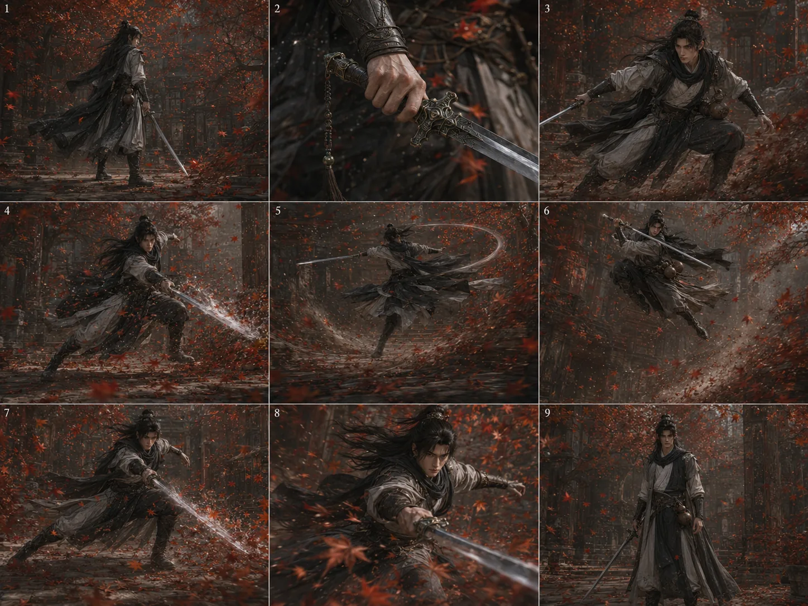
打斗燃剪 / 镜头张力AI SHORT DRAMA / AIGC VISUAL EXECUTION / STORYBOARD DESIGN
WANG KAIYUAN
AI SHORT
DRAMA VISUAL
EXECUTION
汪开院 · AIGC短剧视觉执行 / 全流程制作
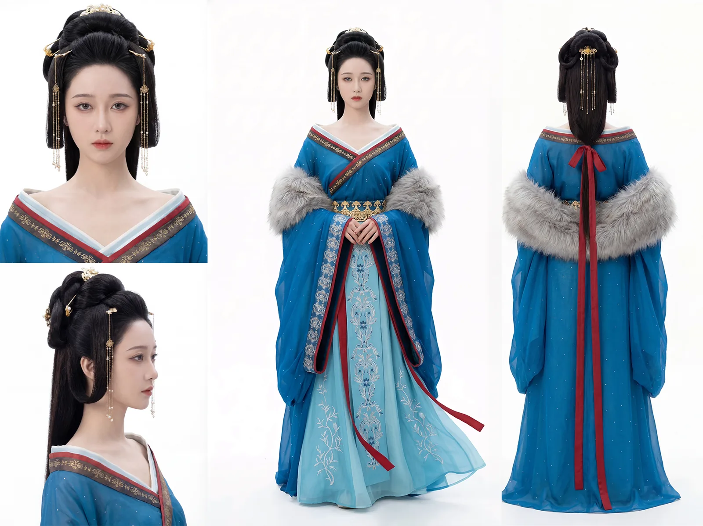
个人原创人设定位AI短剧视觉执行 / 全流程制作
项目经验10+AI仿真人短剧商业项目 / 5+已上线 / 100+人设及场景资产图
专业背景江西师范大学 · 动画专业
FEATURED PREVIEW
核心作品预览
核心预览切换为原创《钦山食魃》，以山景场景资产作为主视觉，突出原创世界观、场景建立和镜头执行链路。
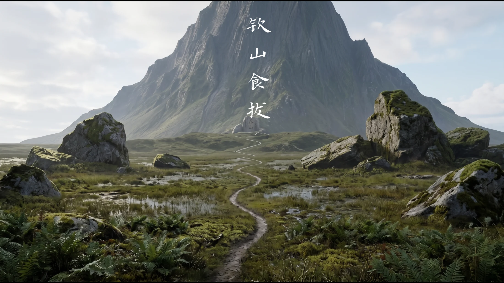
原创《钦山食魃》制作链路
- 剧本分析
- 角色造型设计
- 场景资产设计
- 分镜头脚本
- 动作链提示词
- 视频生成
- 剪辑成片
SELECTED CASES
精选项目
按你的主要项目重新排序：原创世界观、都市短剧、道具演示动画、动作燃剪，再补充其他分类项目。
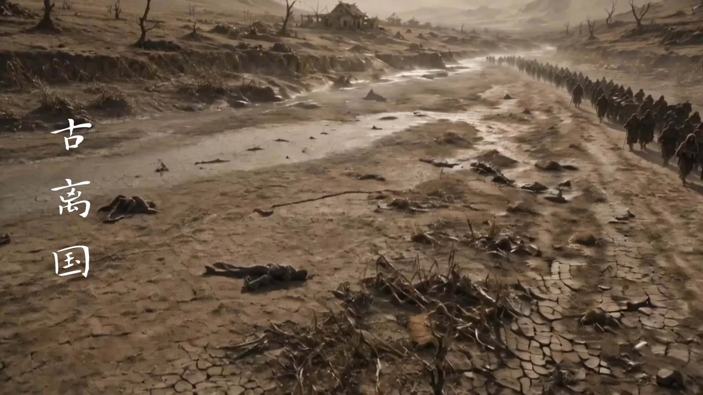
原创世界观短片
原创《钦山食魃》
负责原创场景、怪物造型、人物设定与世界观视觉开发，证明从概念设定到镜头画面方案的能力。
- 世界观
- 怪物造型
- 场景资产
都市 AI短剧
老公出轨我装傻
依据都市情节整理人物、场景和镜头片段，通过动作链描述和素材筛选推进可剪辑镜头。
- 都市情绪
- 人物关系
- 镜头筛选
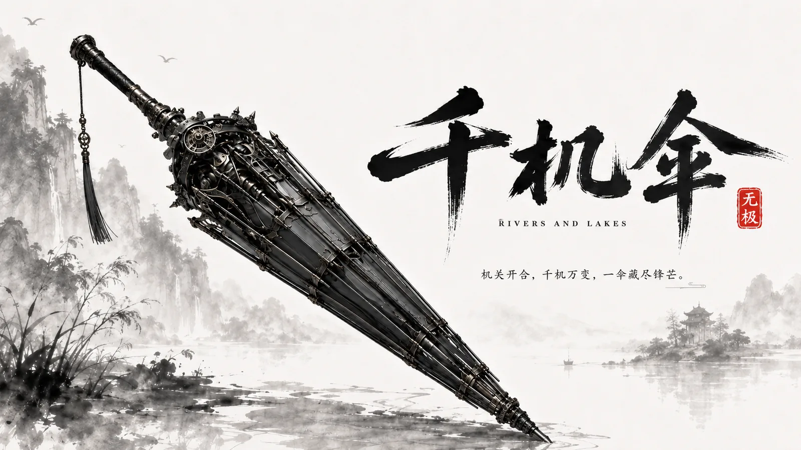
演示动画
千机伞演示动画
围绕道具演示和动作节奏做视觉展示型动画，突出动作逻辑和展示镜头的组织能力。
- 道具演示
- 动作节奏
- 视觉展示
AIGC动画练习
打斗燃剪
围绕动作镜头、环境氛围和燃剪节奏进行素材组织，强化画面冲击和镜头张力。
- 动作镜头
- 燃剪节奏
- 氛围控制
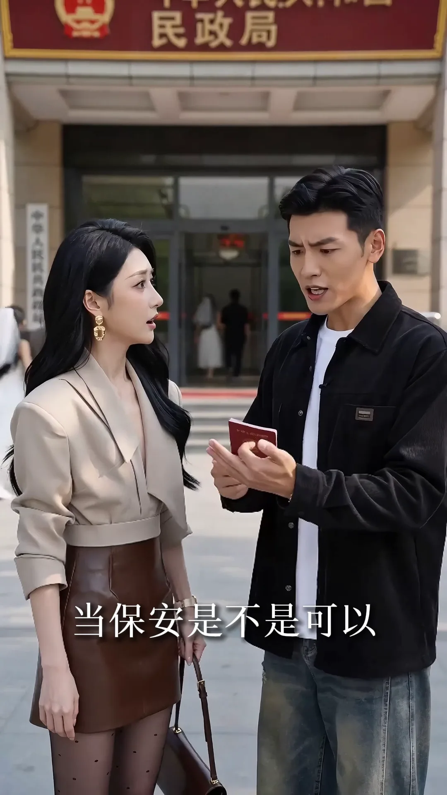
AI仿真人短剧
让你送外卖仿真人剧
竖屏短剧项目，负责视频素材生成、镜头执行和预览片段整理，重点控制素材可用性。
- 仿真人
- 竖屏短剧
- 成片预览
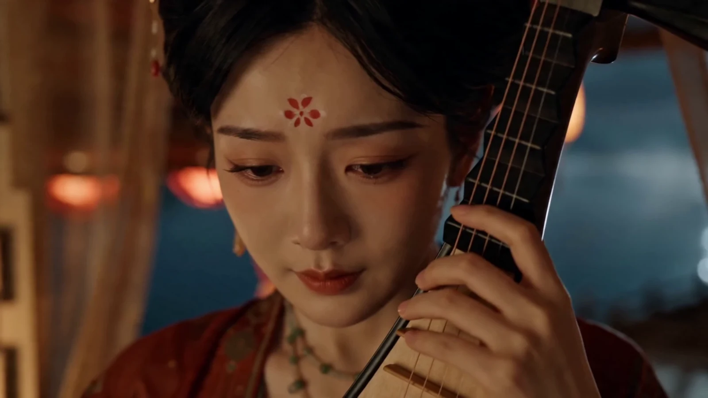
古风短片
琵琶行短片
古风文本视觉化练习，关注角色造型、场景氛围和分镜气质的统一表达。
- 古风文本
- 角色造型
- 场景氛围
VISUAL WALL
作品视觉墙
优先展示横屏成片画面、动作燃剪、场景资产和分镜图，人设图只保留少量最能证明角色造型能力的内容。
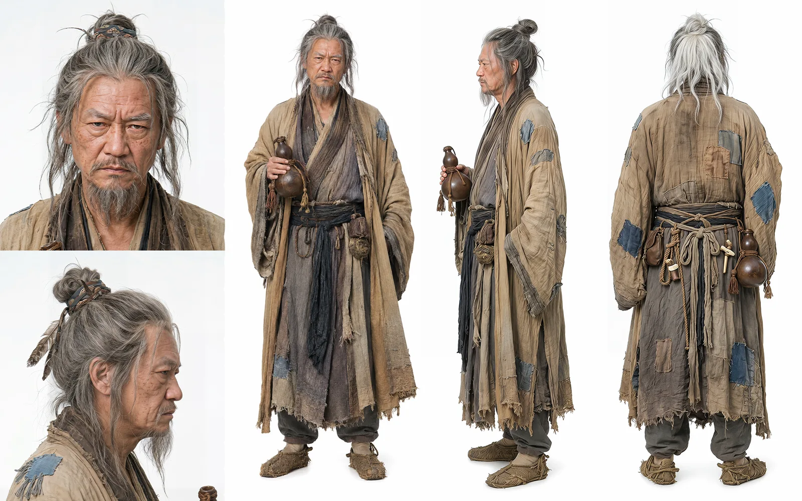
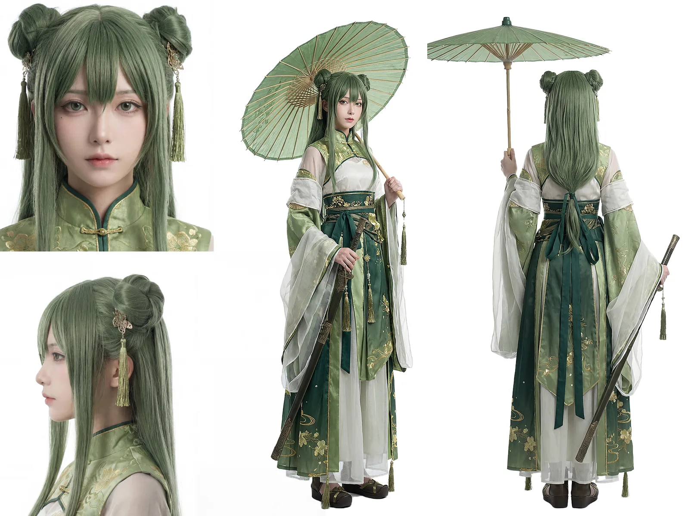
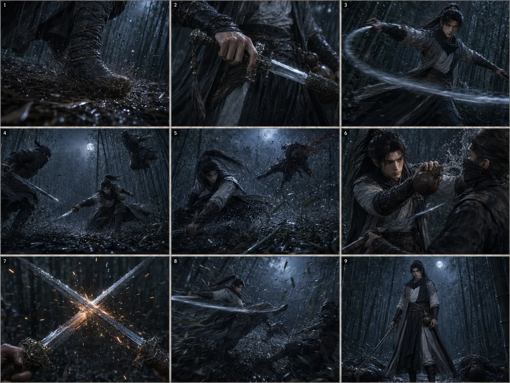
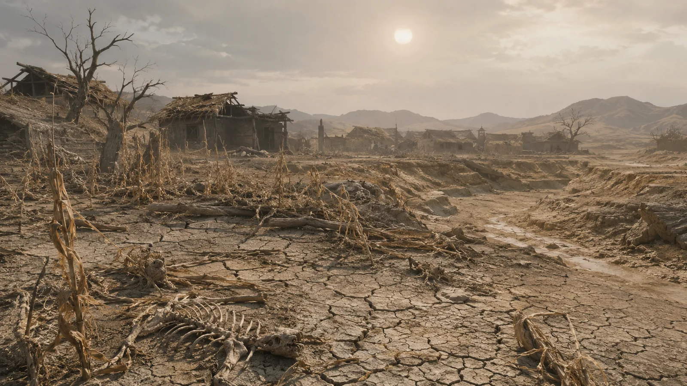
PRODUCTION PIPELINE
AI真人剧全流程制作
- 01剧本分析
读取人物、冲突、情绪和爽点。
- 02角色造型设计
明确人物身份、服化道和形象一致性。
- 03场景资产设计
建立空间、道具、氛围和时代质感。
- 04分镜头脚本
规划景别、构图、运动方向与节奏。
- 05动作链提示词
让 AI 视频动作更连续、可剪。
- 06视频生成
批量生成镜头素材并进行初筛。
- 07素材质检
排查漂移、穿帮、抖动和不可用素材。
- 08剪辑成片
整理节奏预览，推进版本复盘。
TOOL STACK
工具与产线能力
文本分析
ChatGPT / DeepSeek / 豆包
剧本拆解、场次梳理、提示词整理、版本复盘。图片生成
ChatGPT / Midjourney / Nano Banana
角色参考、场景参考、分镜图与风格统一。视频生成
即梦 / Seedance 2.0 / 可灵
图生视频、动作测试、镜头稳定性评估。剪辑后期
剪映 / PR / AE / PS
素材筛选、节奏预览、画面修正与交付整理。RESUME
工作经历
杭州掌玩网络技术有限公司 · AI动画测试师
负责 AI 仿真人短剧制作链路中的可视化执行工作，承接剧本与制作需求，拆解场次、人物关系、情绪转折和镜头重点，形成可落地的 AIGC 生成方案。
围绕文生图、图生视频、角色一致性、动作连贯性、镜头稳定性、运镜可控性等维度评估前沿 AI 模型，记录测试结果并归因生成问题。
南昌新禾艺术中心 · 美术教学
承担素描、速写、动漫方向基础教学，进行课堂示范、绘画指导和作品点评，强化造型、结构、光影和画面表达能力。
江西师范大学 · 动画专业
主修造型基础、剧本与分镜、视听语言、实验动画、专业软件、数码摄影、交互设计基础、动漫传播设计、文创设计。
FUTURE PLAN
未来规划
未来希望向 AI 短剧导演助理、分镜视觉化与视觉导演方向持续发展。短期内继续提升剧本拆解、人物调度、镜头设计、动作链提示词和素材质检能力；中长期希望把学校阶段积累的动画造型、分镜设计、视听语言和镜头叙事训练，与工作中的 AIGC 生成流程、模型测试、剪辑预览和项目复盘持续结合，逐步形成兼具导演思维、技术落地和商业执行意识的 AI 短剧制作能力。
CONTACT